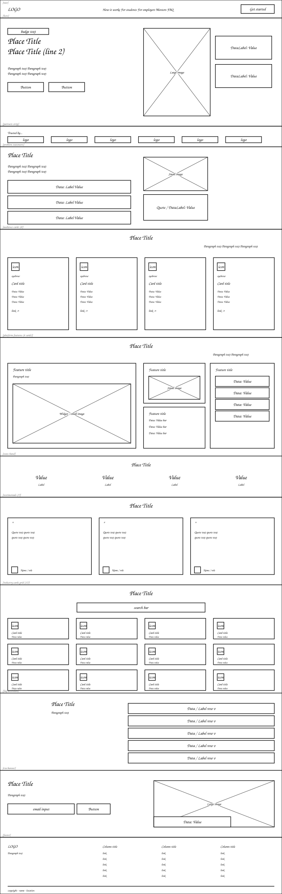
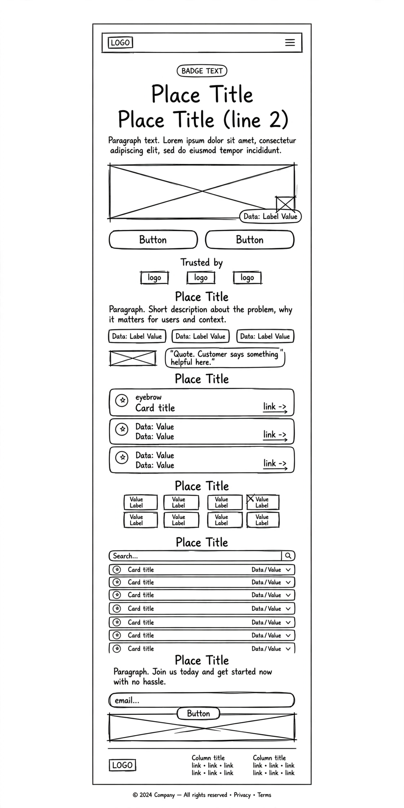

Site Name: Kwarter
Proposed Domain: kwarter.africa (kwarter.com alternative)
This name was chosen because:
- Kwar - derived from "quarter" representing a district/community where career growth happens, and also evokes "Kwar" as in knowledge + career
- Short, memorable, 7 letters, easy to pronounce across African markets
- Represents the four communities it serves: Students, Employers, Mentors, Training Providers - a quarter for each
- Modern tech-startup feel suitable for Gen Z and employers like Andela, Flutterwave, Paystack
- Available brand identity - works as both a platform and a career community
Site Purpose
Kwarter is a website that introduces a platform designed to help university students and recent graduates discover internship opportunities, career mentorship, and industry-relevant training programs across Africa, starting in Nigeria.
The site will provide:
- For Students & Graduates: Searchable internship listings with filters by industry, location, duration and skill level, saved opportunities, CV builder, and career resources
- For Employers: Ability to post internships, vetted candidate profiles, employer branding tools, and talent pipeline management
- For Professional Mentors: Platform to guide students, flexible scheduling, mentor profiles, reviews, and impact tracking
- For Training Providers: Course listing marketplace, verified enrollment, analytics, and certificate issuance
- Information about graduate unemployment challenges (60% struggle within 12 months), the employer skills gap (73%), and how Kwarter bridges education to employment
- Dynamic features: Smart Internship Search, Mentor Matching, Skill Development progress tracking, searchable categories, saved opportunities using localStorage, interactive FAQ, and application/contact forms
Scenarios
Target Audience: Nigerian university students, recent graduates, employers, and professional mentors.
Color Schema
Colors extracted from the Kwarter brand identity to create a modern, professional, and welcoming experience.
Used for headings, navigation, footer, and primary buttons.
Used for the page background and content sections.
Used for buttons, highlights, links, and accents.
Used for body text to improve readability.
Typography
Two fonts were selected to create a modern and professional appearance while maintaining excellent readability.
Font 1: Fraunces
The platform that launches careers across Africa
Fraunces is used for all headings throughout the website because it gives the platform a professional and trustworthy appearance.
Font 2: Plus Jakarta Sans
Join thousands of students, graduates, mentors, and employers building their future with Kwarter.
Plus Jakarta Sans is used for body text, navigation, buttons, forms, and general content because it is highly readable on desktop and mobile devices.
Wireframes
Home page layout - designed mobile-first, then enhanced for wider viewports. Both maintain same content hierarchy but adapt layout.


Layout Notes:
- Header: Desktop - Logo left, nav center (How It Works, For Students, For Employers, Mentors, FAQ), Log In + Get Started right. Mobile - Logo + Hamburger
- Hero: Desktop - 2 columns (text left, image with floating stats right). Mobile - Image first, then text stacked
- Four Communities: Desktop - 4 cards in row. Mobile - 1 column stacked
- Platform Features: Smart Search, Mentor Matching, Skill Dev, Career Resources - Interactive JS filtering
- Dynamic Elements Planned: Internship filter with array methods, localStorage for saved internships, FAQ accordion, email validation, dynamic stats counter